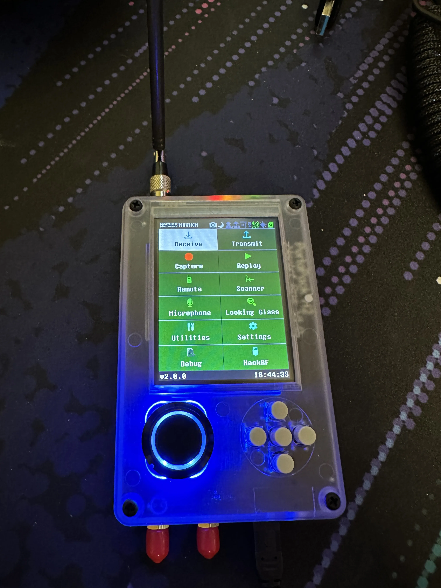

Getting a Hackrf
After over a week in shipping1. I finally got my portapack h2 in for my hackrf one.

I’m not done with this build yet. I have a battery in the mail so I don’t have to be tethered to a power source. And I have an all black metal case coming in.
So far, the main things I’ve done with it are: receive ADS-B, and listen in on some NFM broadcasts (the little radios some businesses use). I am planing on doing more (and a longer blog post), just need that battery.
-
From California to Maryland, wth USPS ↩︎